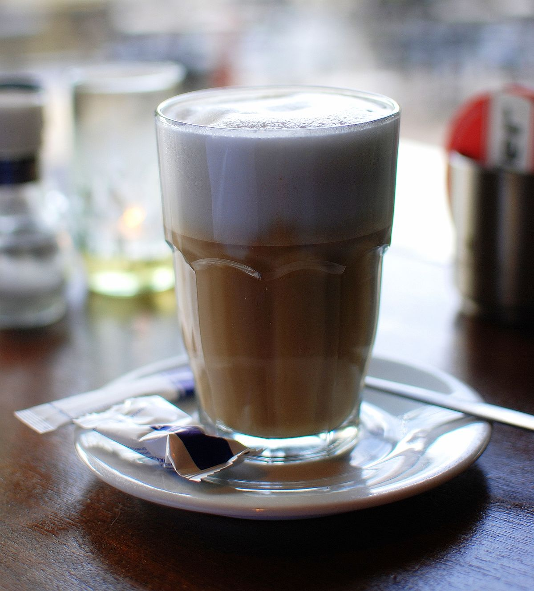

Arroz con pollo ecuadorian

Arroz con pollo is a traditional dish of Spain and Latin America. It's rice, chicken and vegetables.
Ceviche

A seafood dish originating in Peru, typically made from fresh raw fish cured in citrus juices, such as lemon or lime, and spiced with ají, chili peppers or other seasonings. It's shrimp marinated in lime and orange juice with red onions.
Llapingachos

They are potato patties made with cheese and cooked on a griddle until golden brown.
Espresso
Espresso is a full-flavored, concentrated form of coffee that is served in “shots.”
Latte
Latte is a coffee-based drink made primarily from espresso and steamed milk. It consists of one-third espresso, two-thirds heated milk and about 1cm of foam.